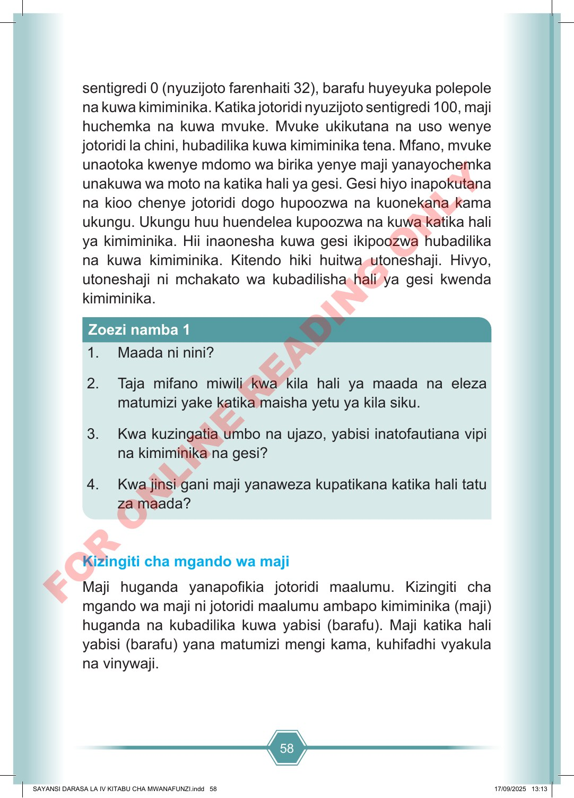

58 sentigredi 0 (nyuzijoto farenhaiti 32), barafu huyeyuka polepole na kuwa kimiminika. Katika jotoridi nyuzijoto sentigredi 100, maji huchemka na kuwa mvuke. Mvuke ukikutana na uso wenye jotoridi la chini, hubadilika kuwa kimiminika tena. Mfano, mvuke unaotoka kwenye mdomo wa birika yenye maji yanayochemka unakuwa wa moto na katika hali ya gesi. Gesi hiyo inapokutana na kioo chenye jotoridi dogo hupoozwa na kuonekana kama ukungu. Ukungu huu huendelea kupoozwa na kuwa katika hali ya kimiminika. Hii inaonesha kuwa gesi ikipoozwa hubadilika na kuwa kimiminika. Kitendo hiki huitwa utoneshaji. Hivyo, utoneshaji ni mchakato wa kubadilisha hali ya gesi kwenda kimiminika. 1. Maada ni nini? 2. Taja mifano miwili kwa kila hali ya maada na eleza matumizi yake katika maisha yetu ya kila siku. 3. Kwa kuzingatia umbo na ujazo, yabisi inatofautiana vipi na kimiminika na gesi? 4. Kwa jinsi gani maji yanaweza kupatikana katika hali tatu za maada? Zoezi namba 1 Kizingiti cha mgando wa maji Maji huganda yanapofikia jotoridi maalumu. Kizingiti cha mgando wa maji ni jotoridi maalumu ambapo kimiminika (maji) huganda na kubadilika kuwa yabisi (barafu). Maji katika hali yabisi (barafu) yana matumizi mengi kama, kuhifadhi vyakula na vinywaji. SAYANSI DARASA LA IV KITABU CHA MWANAFUNZI.indd 58 SAYANSI DARASA LA IV KITABU CHA MWANAFUNZI.indd 58 17/09/2025 13:13 17/09/2025 13:13 F O R O N L I N E R E A D I N G O N L Y